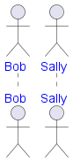
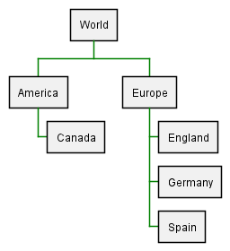
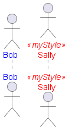
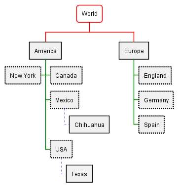
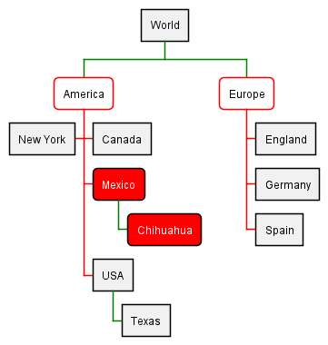

The style feature is still in testing stage. Starting with version 1.2019.9, style is enabled by default for mindmap and wbs diagrams. For old diagrams and old PlantUML version, you have to use skinparam useBetaStyle true to test this feature. For new diagrams and new PlantUML version, style is now enabled by default. There are some working examples on this page. Currently, skinparam are used to change the rendering (fonts, colors...) of diagrams. Although the current system is working, it has some important limitations: - skinparam allow global changes for a whole diagram
- every kind of diagram (sequence, class, activity) has its own skinparam
- it is possible to use
<<stereotype>> to define specific settings for groups of elements with the same stereotype - you can use creole syntax to individually change some setting
- there is an explosion of possible skinparams (see plantuml-skinparam for an attempt to grok them)
- some element cannot be stereotyped (for example, messages in sequence diagrams)
What we wish: - The possibility to use individual change everywhere (so probably with creole engine which will be kept).
- The possibility to change a setting (for example default font size, color, name...) for all diagrams without to have to set a setting for Sequence, then one for Class, then one for Activity.
- At the same time, the possibility to change a setting for a specific diagrams type (only Sequence for example).
- Having a syntax close to CSS
- No more hardcoded values (size, color...) in the core PlantUML library. Those values should be store in one single
plantuml.skin file that people could read and modify. - Keep it simple : since nobody is reading the documentation (which is often out-of-date anyway), people should understand the style system just in reading example.
- Avoid combinatorial explosion in style naming.
Note that even if the existing skinparam syntax may be deprecated, all existing legacy diagrams should still work with future versions of PlantUML. The following properties can be set in style: - FontName
- FontColor
- FontSize
- FontStyle
- BackGroundColor
- HyperLinkColor
- LineColor (old
BorderColor) : seems more generic - LineThickness
- LineStyle (old
BorderStyle): on real number or two real numbers separated with - - Padding
- Margin
- RoundCorner
- DiagonalCorner
- ExportedName : used for some format (SVG), not implemented
- Image : not implemented
- ImagePosition : not implemented
- MinimumWidth : not implemented
- WordWrap (to be renamed as MaximumWidth) (add carriage return if needed)
- HorizontalAlignment : left, right or center
- ...
The current model has moved to work similarly to CSS, using a model of scoping and cascading styles to either element types or user-assigned styles (via <<stereotype>> notation). Style can be inlined using <style> and </style> separators. It is also possible to store style definition in some external file and to reference it using <style file=MyOwnFile.css>. Basic example of a Sequence Diagram style 🎉 Copied! 
 | @startuml
skinparam useBetaStyle true
' style enclosure declaration
<style>
' scope to sequenceDiagram elements
sequenceDiagram {
' scope to actor element types
actor {
FontColor Blue
}
}
}
</style>
' printed in blue
actor Bob
' also printed in blue
actor Sally
@enduml
 |
Basic example of a Work Breakdown Structure style Let's at a different example, that of a Work Breakdown Structure: 🎉 Copied!
| @startwbs
<style>
' this time, scoping to wbsDiagram
wbsDiagram {
' Here we introduce a global style, i.e. not targeted to any element
' thus all lines (meaning connector and borders,
' there are no other lines in WBS) are black by default
Linecolor black
' But we can also target a diagram specific element, like arrow
arrow {
' note that Connectors are actually "Arrows"; this may change in the future
' so this means all Connectors and Arrows are now going to be green
LineColor green
}
}
</style>
* World
** America
*** Canada
** Europe
*** England
*** Germany
*** Spain
@endwbs
 |
We can extend these examples to start targeting not just element types, but specific elements. Using user defined styles in a Sequence Diagram 🎉 Copied!
| @startuml
skinparam useBetaStyle true
' style enclosure declaration
<style>
' scope to sequenceDiagram elements
sequenceDiagram {
' scope to actor element types
actor {
FontColor Blue
}
' define a new style, using CSS class syntax
.myStyle {
FontColor Red
}
}
</style>
' printed in blue
actor Bob
' this will now be printed in Red
actor Sally <<myStyle>>
@enduml
 |
NOTE: If the <<myStyle>> is showing, it is likely a bug, resolved in newer betas. NOTE: This section is still very experimental and may change! As we are following the CSS model now, then it should be possible to use selectors to simplify targeting groups of elements, like those "children" (or "downstream") of a given element in diagrams like Work Breakdown or MindMaps. Using the depth selector in a WBS 🎉 Copied!
| @startwbs
<style>
wbsDiagram {
' all lines (meaning connector and borders, there are no other lines in WBS) are black by default
Linecolor Black
arrow {
' Note that connector are actually "arrows" even if they don't look like arrows
' This is to be consistent with other UML diagrams. Not 100% sure that it's a good idea
' So now connectors are green at this level
LineColor Green
}
:depth(0) {
' will target the "root" (first level) node,
' AND root level elements like Arrows (styled by Line styles)
' Note how it will override the
BackgroundColor White
RoundCorner 10
LineColor red
}
arrow {
:depth(2) {
' Targetting only connector between Mexico-Chihuahua and USA-Texas
LineColor blue
LineStyle 4
LineThickness .5
}
}
node {
:depth(2) {
' Targetting the Lines at a depth of 2
LineStyle 2
LineThickness 2.5
}
}
}
</style>
* World
** America
*** Canada
*** Mexico
**** Chihuahua
*** USA
**** Texas
***< New York
** Europe
*** England
*** Germany
*** Spain
@endwbs
 |
Using the "descendant" pseudo selector Of course, sometimes you want to target all "child" (or "downstream") elements of a given element. The * selector works as in CSS, to say: "this element, and all elements of any type that is it's child". An example: 🎉 Copied!
| @startwbs
<style>
wbsDiagram {
Linecolor black
arrow {
LineColor green
}
:depth(1) {
BackgroundColor White
RoundCorner 10
LineColor red
}
.mexicoStyle * {
BackgroundColor Red
FontColor White
RoundCorner 10
}
}
</style>
* World
** America
*** Canada
*** Mexico <<mexicoStyle>>
**** Chihuahua
*** USA
**** Texas
***< New York
** Europe
*** England
*** Germany
*** Spain
@endwbs
 |
NOTE: This is still a work in progress, and may not work as expected. If a file named plantuml.skin is found in the same folder as the diagram, it will attempt to be loaded and used during diagram creation. This lays the groundwork--along with scoping styles to specific diagrams, and user defined styles--for creating truly complex and persistent styles, without including them in each of your diagrams. NOTE: This is still a work in progress, and may not show every element in every diagram. You can use the -v (or -verbose) command line argument to get some debug output to help you determine what elements are in use, so you can target them. java -jar plantuml.jar -v -tpng diagram.pu results in:
(0.378 - 256 Mo) 238 Mo - Using style node.depth(0).root.wbsdiagram.rootnode.element
(0.546 - 256 Mo) 237 Mo - Using style depth(2).node.root.wbsdiagram.leafnode.element
(0.547 - 256 Mo) 237 Mo - Using style depth(2).node.root.*.wbsdiagram.element
(0.560 - 256 Mo) 236 Mo - Using style node.root.depth(3).wbsdiagram.leafnode.element
(0.561 - 256 Mo) 236 Mo - Using style node.root.depth(3).*.wbsdiagram.mexicostyle.element
(0.562 - 256 Mo) 236 Mo - Using style node.root.depth(3).*.wbsdiagram.element
(0.565 - 256 Mo) 236 Mo - Using style depth(2).node.root.wbsdiagram.mexicostyle.element
(0.569 - 256 Mo) 235 Mo - Using style depth(2).node.root.wbsdiagram.element
(0.571 - 256 Mo) 235 Mo - Using style node.depth(1).root.wbsdiagram.element
(0.572 - 256 Mo) 235 Mo - Using style node.depth(1).root.*.wbsdiagram.element
(1.963 - 256 Mo) 250 Mo - Using style depth(0).arrow.root.wbsdiagram.element
(1.964 - 256 Mo) 250 Mo - Using style depth(1).arrow.root.wbsdiagram.element
(1.965 - 256 Mo) 250 Mo - Using style depth(2).arrow.root.wbsdiagram.element
| |